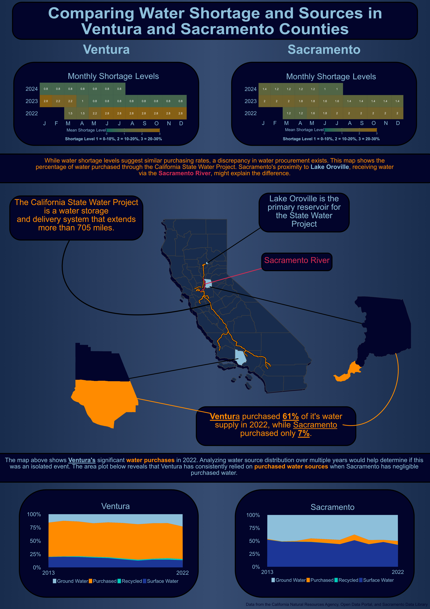

Show the code
library(tidyverse)
library(here)
library(spnaf)
library(stringr)
library(ggExtra)
library(tmap)
library(sf)
library(janitor)
library(ggridges)
library(gridExtra)December 13, 2024
California is a diverse and beautiful state, however, it suffers from long periods of drought. Water is the most essential nutrient and unfortunately, it can be one of the most scarce. Understanding the distribution of water throughout the state is a key factor in assessing California’s resiliency to drought. The data described in this analysis comes from the Department of Water Resources and the State Water Resources Control Board. It has been recently compiled by the California Water Data Consortium and posted on the California Natural Resource Agency Portal for open accessibility. From this data, I was interested in assessing the availability and allocation of water resources throughout districts. I chose to focus on Sacramento and Ventura counties because they represent two distinct latitudinal regions in California and had sufficient data for comparison.

When creating any type of visualization, it is important to follow the 10 design elements. These elements were implemented into my visualization by the following:
water_shortage <- read_csv(here("data", "actual_water_shortage_level.csv"))
five_year_shortage <- read_csv(here("data", "five_year_water_shortage_outlook.csv"))
historical_production <- read_csv(here("data", "historical_production_delivery.csv"))
population <- read_csv(here("data", "population_clean.csv"))
source_name <- read_csv(here("data", "source_name.csv"))
# Map boundary data
ca_counties <- st_read(here("data", "ca_counties", "CA_Counties.shp"))
ca_boundary <- st_read(here("data", "ca_state", "CA_State.shp"))
project_line <- st_read(here("data", "i17_StateWaterProject_Centerline", "i17_StateWaterProject_Centerline.shp"))
California_Counties <- st_read(here("data", "California_Counties", "California_Counties.shp"))
ca_project <- st_read(here("data", "i17_StateWaterProject_ConstructionDivisions", "i17_StateWaterProject_ConstructionDivisions.shp"))
ca_lakes <- st_read(here("data", "California_Lakes", "California_Lakes.shp"))
ca_state_project <- st_read(here("data", "i17_StateWaterProject_Repayment_Reaches", "i17_StateWaterProject_Repayment_Reaches.shp"))
ca_rivers <- st_read(here("data", "Rivers", "Rivers.shp"))# Filter water shortage level for the following districts by org_id
level_month <- water_shortage %>%
filter(org_id %in% c(376, 2158, 2629, 2631, 372, 2132, 2140, 2683, 2130)) %>%
# Create a new county column by using stringr library
mutate(county = case_when(
str_detect(supplier_name, fixed("ventura", ignore_case = TRUE)) ~ "Ventura",
str_detect(supplier_name, fixed("sacramento", ignore_case = TRUE)) ~ "Sacramento",
TRUE ~ "other"
)) %>%
# Filter out NA values for shortage level
filter(!is.na(state_standard_shortage_level)) %>%
# Create year and month columns
mutate(year = year(start_date),
month = month(start_date)) %>%
# Group by for aggregating the mean
group_by(county, year, month) %>%
# Summarise the mean for the county, year, and month
summarise(mean_level = mean(state_standard_shortage_level))
# Create a df for only Ventura
vent_level_month <- level_month %>%
filter(county == "Ventura")
# Create a df for only Sacramento
sac_level_month <- level_month %>%
filter(county == "Sacramento")
# Plot the Ventura data
vent_monthly <- ggplot(vent_level_month, aes(x = factor(month), y = factor(year), fill = mean_level)) +
geom_tile() +
# Add the values for each tile
geom_text(aes(label = round(mean_level, 1)), color = "white", size = 8) +
# Changes the months from numbers to their abbreviations for x-axis
scale_x_discrete(name = "month", labels = c("1" = "J", "2" = "F", "3" = "M", "4" = "A", "5" = "M", "6" = "J", "7" = "J", "8" = "A", "9" = "S", "10" = "O", "11" = "N", "12" = "D")) +
# Color range for the values
scale_fill_continuous(low = "#01665D", high = "#8C6009", limits = c(0, 3)) +
# Add title
labs(title = "Monthly Shortage Levels",
fill = "Mean Shortage Level") +
# Fix the tiles to be squares
coord_fixed(ratio = 1) +
# Theme for image export
theme_minimal() +
theme(
plot.title = element_text(size = rel(6), color = "#8EBFDA", hjust = 0.5),
axis.text.x = element_text(hjust = 1, size = rel(5), colour = "#8EBFDA"), # Rotate x-axis labels for better readability
axis.title.x = element_blank(), # Remove x-axis title
axis.title.y = element_blank(), # Remove y-axis title
axis.text.y = element_text(size = rel(5), color = "#8EBFDA"), # Adjust size of y-axis labels if needed
axis.ticks = element_blank(), # Remove axis ticks
panel.grid = element_blank(), # Remove gridlines
panel.background = element_blank(),
plot.background = element_rect(fill = "#02042C"),
plot.margin = margin(0,0,0,0),
legend.position = "bottom",
legend.key.height = unit(1, "cm"), # Elongate the gradient (height)
legend.key.width = unit(3, "cm"), # Elongate the gradient (width)
legend.text = element_text(size = rel(2), color = "#8EBFDA"),
legend.title = element_text(size = rel(3), color = "#8EBFDA", vjust = 1)
)
# Plot the Sacramento Data
sac_monthly <- ggplot(sac_level_month, aes(x = factor(month), y = factor(year), fill = mean_level)) +
geom_tile() +
# Add the values for each tile
geom_text(aes(label = round(mean_level, 1)), color = "white", size = 8) +
# Changes the months from numbers to their abbreviations for x-axis
scale_x_discrete(name = "month", labels = c("1" = "J", "2" = "F", "3" = "M", "4" = "A", "5" = "M", "6" = "J", "7" = "J", "8" = "A", "9" = "S", "10" = "O", "11" = "N", "12" = "D")) +
# Color range for the values
scale_fill_continuous(low = "#01665D", high = "#8C6009", limits = c(0, 3)) +
# Add title
labs(title = "Monthly Shortage Levels",
fill = "Mean Shortage Level") +
# Fix the tiles to be squares
coord_fixed(ratio = 1) + # Make tiles square
# Theme for image export
theme_minimal() +
theme(
plot.title = element_text(size = rel(6), color = "#8EBFDA", hjust = 0.5),
axis.text.x = element_text(hjust = 1, size = rel(5), colour = "#8EBFDA"), # Rotate x-axis labels for better readability
axis.title.x = element_blank(), # Remove x-axis title
axis.title.y = element_blank(), # Remove y-axis title
axis.text.y = element_text(size = rel(5), color = "#8EBFDA"), # Adjust size of y-axis labels if needed
axis.ticks = element_blank(), # Remove axis ticks
panel.grid = element_blank(), # Remove gridlines
panel.background = element_blank(),
plot.background = element_rect(fill = "#02042C"),
plot.margin = margin(0,0,0,0),
legend.position = "bottom",
legend.key.height = unit(1, "cm"), # Elongate the gradient (height)
legend.key.width = unit(3, "cm"), # Elongate the gradient (width)
legend.text = element_text(size = rel(2), color = "#8EBFDA"),
legend.title = element_text(size = rel(3), color = "#8EBFDA", vjust = 1)
)
ggsave("sac_monthly.pdf", plot = sac_monthly, width = 18, height = 9, dpi = 300)
ggsave("vent_monthly.pdf", plot = vent_monthly, width = 18, height = 9, dpi = 300)# Filter to Lake Oroville
ca_oroville <- ca_lakes %>%
filter(NAME == "Lake Oroville") %>%
st_drop_geometry() %>%
st_as_sf(coords = c("LON_NAD83", "LAT_NAD83"))
# Filter counties to Ventura and Sacramento
ca_counties <- ca_counties %>%
clean_names() %>%
mutate(color = case_when(
name == "Ventura" ~ "#8EBFDA", # Color for Ventura county
name == "Sacramento" ~ "#8EBFDA", # Color for Sacramento County
TRUE ~ "#182C4D" # Color for all other counties
))
# Filter to Sacramento River
ca_sac_amer_river <- ca_rivers %>%
filter(NAME == "Sacramento")
# Transform geospatial data to the same CRS
ca_boundary <- st_transform(ca_boundary, crs = 4326)
ca_counties <- st_transform(ca_counties, crs = 4326)
ca_oroville <- st_transform(ca_oroville, crs = 4326)
ca_sac_amer_river <- st_transform(ca_sac_amer_river, crs = 4326)# Plot the State Map
cali_map <- tm_shape(ca_boundary) + # State boundary data
tm_borders() +
# County data
tm_shape(ca_counties) +
tm_polygons(fill = "color") +
tm_layout(frame = FALSE) +
# Adding the State Water Project Line
tm_shape(ca_state_project) +
# Bolding our orange line
tm_lines(col = "black",
lwd = 3) +
# Line we want to see
tm_lines(col = "darkorange",
lwd = 1.5) +
# Add Lake Oroville
tm_shape(ca_oroville) +
tm_dots(fill = "black", size = 0.55) +
tm_dots(fill = "red", size = 0.3) +
# Add Sacramento River
tm_shape(ca_sac_amer_river) +
tm_lines(col = "black", lwd = 3) +
tm_lines(col = "#D42B53", lwd = 1.5)
# Filter for the individual county
# Sacramento county
sac_df <- ca_counties %>%
filter(name == "Sacramento")
# Plot
sac_map <- tm_shape(sac_df) +
tm_polygons(fill = "#02042C") +
tm_layout(frame = FALSE)
# Ventura County
vent_df <- ca_counties %>%
filter(name == "Ventura")
# Plot
vent_map <- tm_shape(vent_df) +
tm_polygons(fill = "#02042C") +
tm_layout(frame = FALSE)
# tmap_save(cali_map, "cali_map.pdf", width = 8, height = 10, dpi = 300, bg = "transparent")# Filter the historical production data
hist_sac <- historical_production %>%
# Filter to org_id related to Sacramento and Ventura
filter(org_id %in% c(376, 2158, 2629, 2631, 372, 2132, 2140, 2683, 2130, 495, 1057, 890, 2469, 433),
!is.na(quantity_acre_feet),
# Interested in the water produced
water_produced_or_delivered == "water produced",
# Values are negligible
!water_type %in% c("non-potable (total excluded recycled)", "non-potable water sold to another pws", "sold to another pws")) %>%
# Categorize org_id into different their respective counties
mutate(county = case_when(
org_id %in% c(376, 2158, 2629, 2631, 495, 1057, 890, 2469, 433) ~ "Ventura",
org_id %in% c(372, 2132, 2140, 2683, 2130) ~ "Sacramento",
TRUE ~ "other"
)) %>%
# Group to month, water type and county
group_by(start_date, water_produced_or_delivered, water_type, county) %>%
# Calculate total quantity for group above
summarise(quantity = sum(quantity_acre_feet)) %>%
ungroup() %>%
# Create new column year
mutate(year = year(start_date)) %>%
# Group for aggregation
group_by(year, county, water_type) %>%
# Summarize information by year
summarise(quantity = sum(quantity)) %>%
group_by(year, county) %>%
# Calculate proportions and percentages for each water type
mutate(total_quantity = sum(quantity),
proportion = quantity / total_quantity,
percent = proportion * 100) %>%
ungroup() %>%
# Filter to only Sacramento
filter(county == "Sacramento")
# Plot
area_sac <- ggplot(hist_sac, aes(x = year, y = percent, fill = water_type)) +
geom_area() +
# Minimlize x-axis scale
scale_x_continuous(breaks = c(2013,2022)) +
# Add percentage to y-axis
scale_y_continuous(labels = scales::label_percent(scale = 1)) +
# Manually fill colors and change legend names
scale_fill_manual(values = c("#8EBFDA", "darkorange", "#00CEBC", "#1C3698"),
labels = c("groundwater wells" = "Ground Water",
"purchased or received from another pws" = "Purchased",
"recycled" = "Recycled",
"surface water" = "Surface Water")) +
# Add labels
labs(x = element_blank(),
y = element_blank(),
title = "Sacramento") +
# Add theme arguments
theme_minimal() +
theme(
# Move legend to the bottom
legend.position = "bottom",
# Adjust title
plot.title = element_text(size = rel(6), color = "#8EBFDA", hjust = 0.5),
#strip.text = element_text(size = rel(3.5), color = "#8EBFDA"),
# Adjust x-axis text
axis.text.x = element_text(hjust = 0.5, size = rel(5)),
# Adjust y-axis size
axis.text.y = element_text(size = rel(5)),
# Add background color to plot
plot.background = element_rect(fill = "#02042C"),
# Get rid of ticks
axis.ticks = element_blank(),
# Change x-axis text
axis.text.x.bottom = element_text(color = "#8EBFDA"),
# Change y-axis text
axis.text.y.left = element_text(color = "#8EBFDA"),
# Get rid of panel grid
panel.grid = element_blank(),
legend.text = element_text(color = "#8EBFDA", size = rel(3.5)),
legend.title = element_blank(),
panel.border = element_blank(),
legend.key.height = unit(1, "cm"),
legend.key.width = unit(1,"cm")
)
# ggsave("area_sac.pdf", plot = area_sac, width = 18, height = 9, dpi = 300)# Same code as above but filter to Ventura at the end
hist_ventura <- historical_production %>%
filter(org_id %in% c(376, 2158, 2629, 2631, 372, 2132, 2140, 2683, 2130, 495, 1057, 890, 2469, 433),
!is.na(quantity_acre_feet),
water_produced_or_delivered == "water produced",
!water_type %in% c("non-potable (total excluded recycled)", "non-potable water sold to another pws", "sold to another pws")) %>%
mutate(county = case_when(
org_id %in% c(376, 2158, 2629, 2631, 495, 1057, 890, 2469, 433) ~ "Ventura",
org_id %in% c(372, 2132, 2140, 2683, 2130) ~ "Sacramento",
TRUE ~ "other"
)) %>%
group_by(start_date, water_produced_or_delivered, water_type, county) %>%
summarise(quantity = sum(quantity_acre_feet)) %>%
ungroup() %>%
mutate(year = year(start_date)) %>%
group_by(year, county, water_type) %>%
summarise(quantity = sum(quantity)) %>%
group_by(year, county) %>%
mutate(total_quantity = sum(quantity),
proportion = quantity / total_quantity,
percent = proportion * 100) %>%
ungroup() %>%
filter(county == "Ventura")
# Plot for Ventura
# Code same as Sacramento
area_ventura <- ggplot(hist_ventura, aes(x = year, y = percent, fill = water_type)) +
geom_area() +
scale_x_continuous(breaks = c(2013,2022)) +
scale_y_continuous(labels = scales::label_percent(scale = 1)) +
scale_fill_manual(values = c("#8EBFDA", "darkorange", "#00CEBC", "#1C3698"),
labels = c("groundwater wells" = "Ground Water",
"purchased or received from another pws" = "Purchased",
"recycled" = "Recycled",
"surface water" = "Surface Water")) +
labs(x = element_blank(),
y = element_blank(),
title = "Ventura") +
theme_minimal() +
theme(
legend.position = "bottom",
plot.title = element_text(size = rel(6), color = "#8EBFDA", hjust = 0.5),
# strip.text = element_text(size = rel(3.5), color = "#8EBFDA"),
axis.text.x = element_text(hjust = 0.5, size = rel(5)),
axis.text.y = element_text(size = rel(5)),
plot.background = element_rect(fill = "#02042C"),
#axis.ticks.x = element_blank(),
axis.ticks = element_blank(),
axis.text.x.bottom = element_text(color = "#8EBFDA"),
axis.text.y.left = element_text(color = "#8EBFDA"),
panel.grid = element_blank(),
legend.text = element_text(color = "#8EBFDA", size = rel(3.5)),
legend.title = element_blank(),
legend.key.height = unit(1, "cm"),
legend.key.width = unit(1,"cm")
)
# ggsave("area_ventura.pdf", plot = area_ventura, width = 18, height = 9, dpi = 300)# Filter data to
historical_filter2 <- historical_production %>%
filter(org_id %in% c(376, 2158, 2629, 2631, 372, 2132, 2140, 2683, 2130, 495, 1057, 890, 2469, 433),
!is.na(quantity_acre_feet),
water_produced_or_delivered == "water produced",
!water_type %in% c("non-potable (total excluded recycled)", "non-potable water sold to another pws", "sold to another pws")) %>%
mutate(county = case_when(
org_id %in% c(376, 2158, 2629, 2631, 495, 1057, 890, 2469, 433) ~ "Ventura",
org_id %in% c(372, 2132, 2140, 2683, 2130) ~ "Sacramento",
TRUE ~ "other"
)) %>%
group_by(start_date, water_produced_or_delivered, water_type, county) %>%
summarise(quantity = sum(quantity_acre_feet)) %>%
ungroup() %>%
mutate(year = year(start_date)) %>%
group_by(year, county, water_type) %>%
summarise(quantity = sum(quantity)) %>%
group_by(year, county) %>%
mutate(total_quantity = sum(quantity),
proportion = quantity / total_quantity,
percentage = proportion * 100) %>%
ungroup()
proportions_2024 <- historical_filter2 %>%
filter(year == 2022) %>%
group_by(county, water_type) %>%
summarise(quantity) %>%
ungroup() %>%
group_by(county) %>%
mutate(percentage = quantity / sum(quantity) * 100) %>%
ungroup()